A.1 Shooting the Pictures
For a homography to relate with two photos exactly, the camera must rotate around a fixed center of projection without moving. To capture the images, I went around Berkeley and stood in one spot and rotated my phone between shots, keeping roughly 40–70% overlap between neighboring photos and taking each set back to back so lighting wouldn't change. Each set of images is three 4032×3024 photos (left, center, right).
Set 1: Sproul Hall
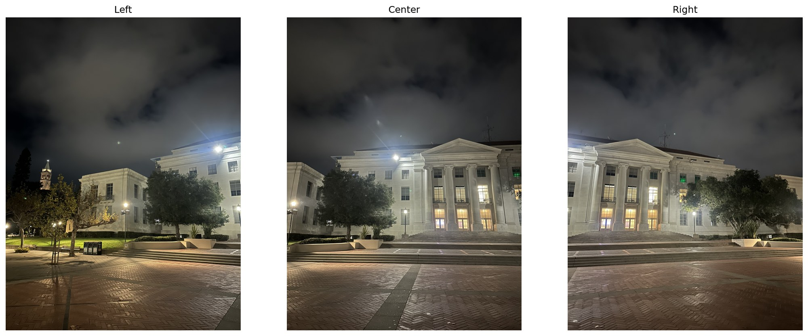
Set 2: Sather Gate
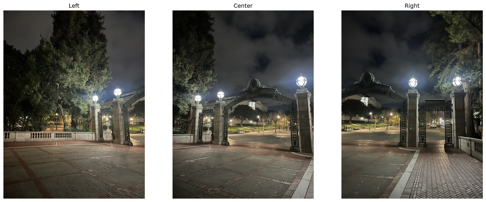
Set 3: Residential Street
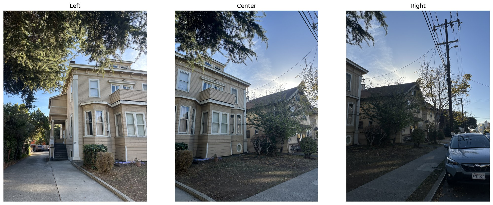
A.2 Recovering Homographies
A homography is a 3×3 projective transform \(H\) with 8 degrees of freedom (the bottom-right entry is fixed to 1). It maps a point \((x, y)\) in one image to \((u, v)\) in the other. I picked 10 corresponding points for each pair of images by hand with a click-to-select tool in matplotlib, choosing sharp, easy-to-locate features like building corners, window edges and lamp posts.
System of equations
Multiplying out the denominators turns both equations into linear in the 8 unknowns, so each correspondence gives two rows. Stacking all \(n\) correspondences gives a \(2n \times 8\) system \(A\mathbf{h} = \mathbf{b}\):
Four points give exactly 8 equations, but the small clicking errors that I may have made due to cursor precision make that solution unstable. With \(n = 10\) the system is overdetermined (20 equations, 8 unknowns), so I solve it with least squares (np.linalg.lstsq), minimizing \(\lVert A\mathbf{h} - \mathbf{b}\rVert^2\). My calc_homography(image1_points, image2_points) builds \(A\) and \(\mathbf{b}\), solves for \(\mathbf{h}\), appends the 1 and reshapes it into \(H\).
Correspondences: Sproul Hall
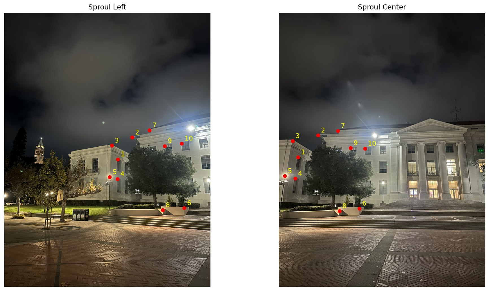
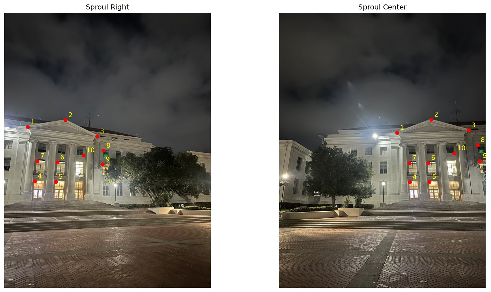
Recovered homographies: Sproul Hall
Both map into the center image's coordinates (full 4032×3024 resolution):
All recovered homographies
To check each fit, I mapped the 10 source points through \(H\) and measured how far they landed from the clicked target points. Errors are in pixels at full resolution.
| Set | Pair | \(H\) | Mean error |
|---|---|---|---|
| Sproul Hall | Left → Center | \(\begin{bmatrix}1.857 & -0.2368 & -2169.1 \\ 0.7839 & 1.585 & -1626.3 \\ 2.929\times10^{-4} & -1.292\times10^{-5} & 1\end{bmatrix}\) | 6.01 px |
| Sproul Hall | Right → Center | \(\begin{bmatrix}0.5086 & 0.1095 & 1274.2 \\ -0.4257 & 0.8624 & 362.5 \\ -1.607\times10^{-4} & -3.454\times10^{-7} & 1\end{bmatrix}\) | 4.05 px |
| Sather Gate | Left → Center | \(\begin{bmatrix}1.466 & -0.1655 & -1869.6 \\ 0.5256 & 1.192 & -875.6 \\ 2.009\times10^{-4} & -6.260\times10^{-5} & 1\end{bmatrix}\) | 3.47 px |
| Sather Gate | Right → Center | \(\begin{bmatrix}0.5962 & -9.104\times10^{-3} & 1206.5 \\ -0.3148 & 0.7462 & 491.6 \\ -1.243\times10^{-4} & -3.087\times10^{-5} & 1\end{bmatrix}\) | 9.33 px |
| Residential | Left → Center | \(\begin{bmatrix}1.896 & -0.291 & -2868.7 \\ 0.8532 & 1.603 & -1950.7 \\ 3.165\times10^{-4} & -3.192\times10^{-5} & 1\end{bmatrix}\) | 10.83 px |
| Residential | Right → Center | \(\begin{bmatrix}0.5351 & 0.01706 & 1169.5 \\ -0.3753 & 0.7582 & 593.7 \\ -1.362\times10^{-4} & -2.911\times10^{-5} & 1\end{bmatrix}\) | 4.80 px |
A.3 Warping the Images & Rectification
My image_warping(image, H, output_shape, interpolation) uses the inverse warping to avoid holes. For every pixel \((x', y')\) in the output, it applies \(H^{-1}\) to find where that pixel comes from in the source image, then samples the source there. Going backwards avoids the holes, and it guarantees that every output pixel will get a value. Furthermore, any output pixels whose source location falls outside the image are marked invalid in an alpha mask, which is reused for blending in A.4. Both interpolation methods:
- nearest: round the source coordinate to the closest pixel and copy its color.
- bilinear: take the 4 surrounding pixels and average them, weighting each by how close it is: \((1-dx)(1-dy)\,I_{00} + dx(1-dy)\,I_{10} + (1-dx)\,dy\,I_{01} + dx\,dy\,I_{11}\).
Rectification
To test the warp function, I rectified rectangular windows photographed at an angle. I clicked the window's 4 corners (top-left, top-right, bottom-right, bottom-left) and then I computed the homography that sends them to the corners of an upright rectangle. That rectangle's size comes from the average lengths of the clicked edges, scaled so the longer side is 600 px, which keeps the window's proportions instead of compressing it.
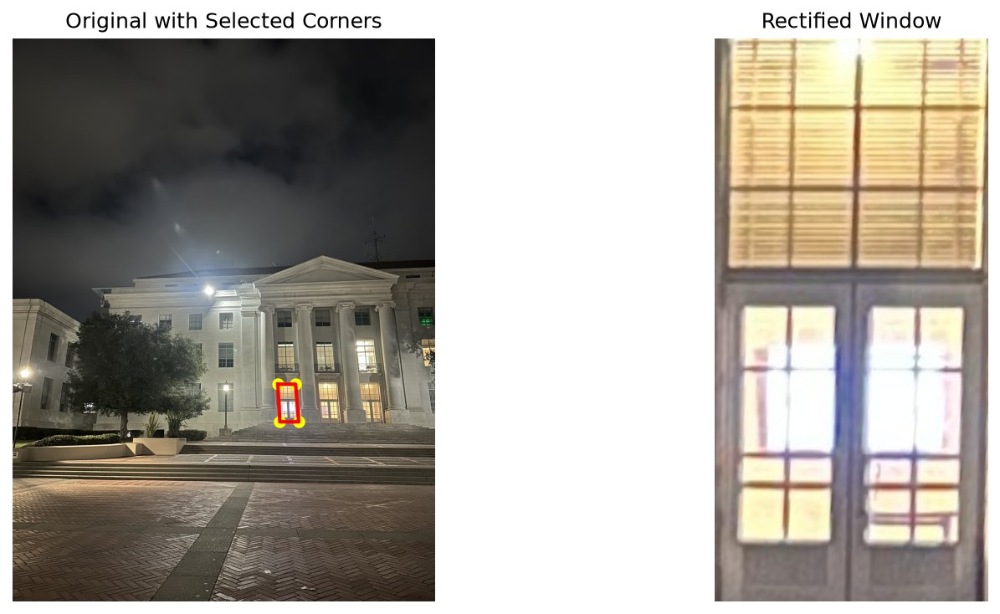
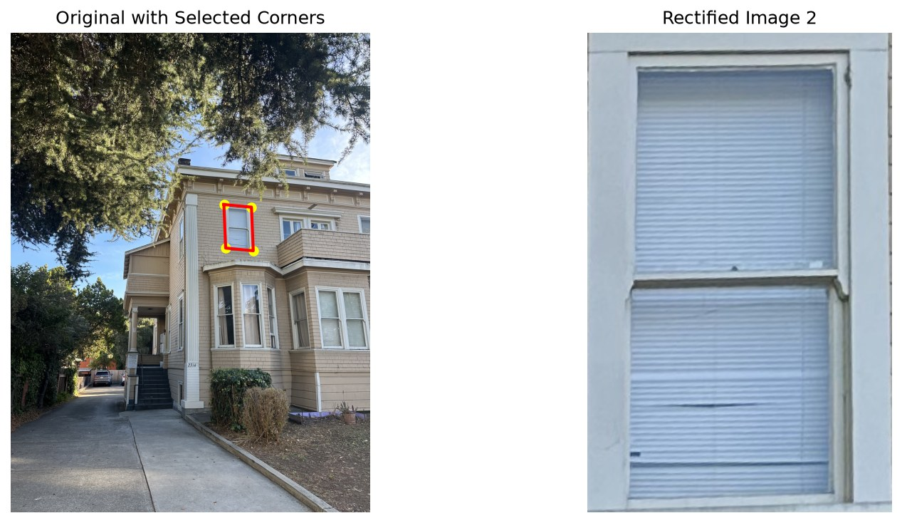
Nearest neighbor vs. bilinear
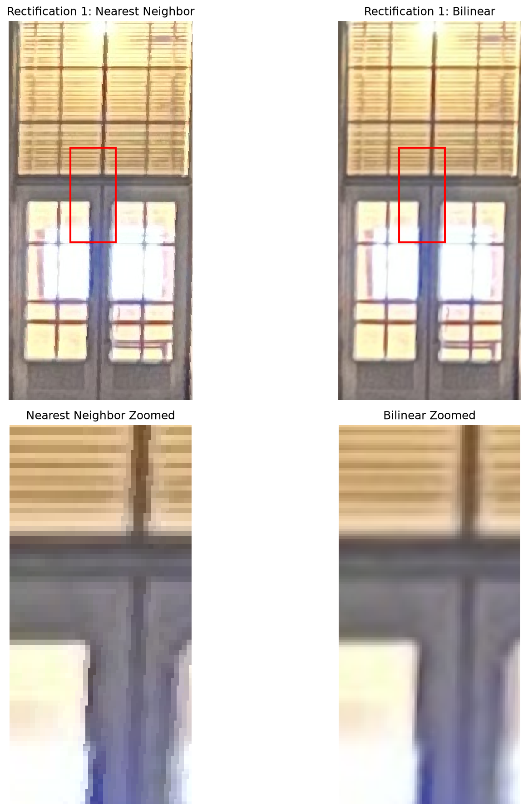
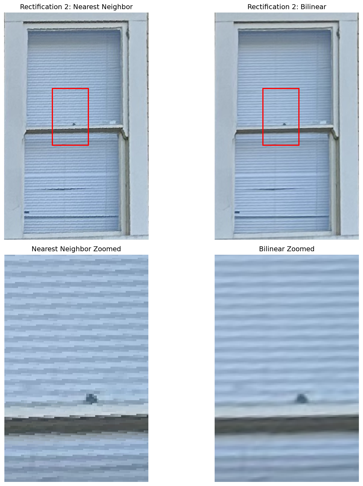
Comparison
Both windows in the images are small originally (about 130×270 px and 230×370 px), so after rectifying them to 600 px they are enlarged by roughly 1.6–2.2×. That enlargement is where the two methods differ most. The nearest neighbor copies whole source pixels, so diagonal and thin edges (the window frames in the zoomed crops) come out jagged. Bilinear blends the 4 neighbors, so those edges stay smooth and continuous. This comes with the cost of a slight softening. Nearest neighbor is a little faster, but bilinear looks better, so I used bilinear for all the mosaics.
A.4 Blending the Images into a Mosaic
For each set, the center photo is used as the reference plane, and the left and right photos are warped into it with their homographies from A.2. I downsized every photo to 1000 px on its longest side for speed, adjusting each \(H\) to match (\(H' = S_{\text{dest}}\,H\,S_{\text{src}}^{-1}\)). I then pushed the four corners of every image through its homography to find the full mosaic's bounds. A translation \(T\) shifts everything to positive coordinates, so each image is warped with \(T H'\) onto one shared canvas.
Blending procedure
Pasting the warped images directly on top of each other leaves hard seams wherever they overlap. This is because exposure and small alignment errors change abruptly at the boundary. Instead, I chose to use feathering with a distance-transform alpha. With this process, each warped image gets a weight map \(w_i\) equal to every pixel's Euclidean distance to the nearest edge of that image's valid region (scipy.ndimage.distance_transform_edt on its mask). The weight is 0 at the image border and grows toward its center. The mosaic is the weighted average
Then, with an overlap, each image's contribution will fade out smoothly as you approach its own edge. Thus, the transition between photos is spread over the whole overlap instead of happening along a visible line. Finally, any of the pixels that no image covers stay black. I then crop a fixed margin off the outside of each mosaic to get rid of some extra bordering.
Mosaic 1: Sproul Hall
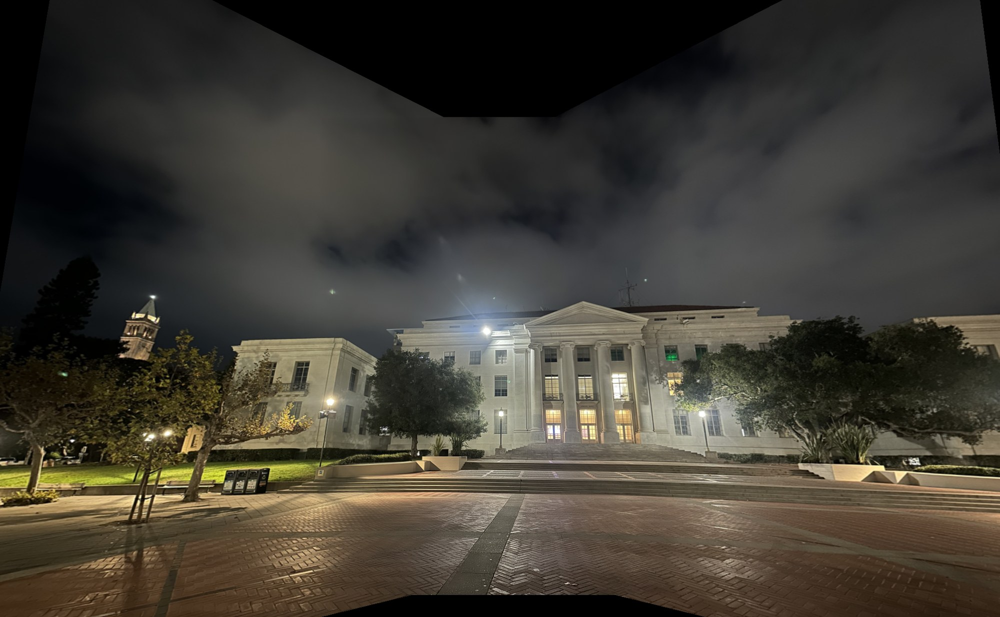
Intermediate steps
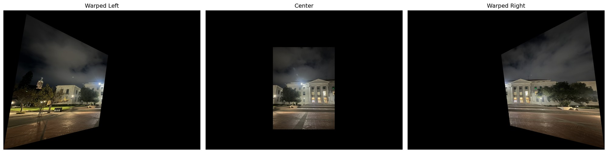
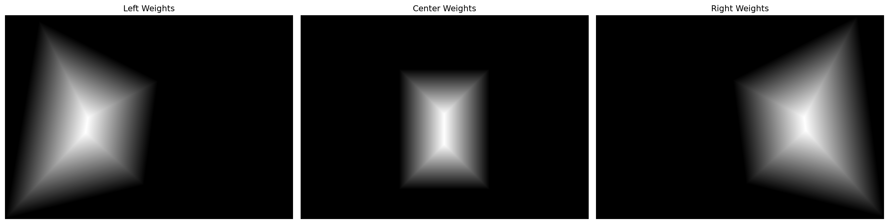
Mosaic 2: Sather Gate
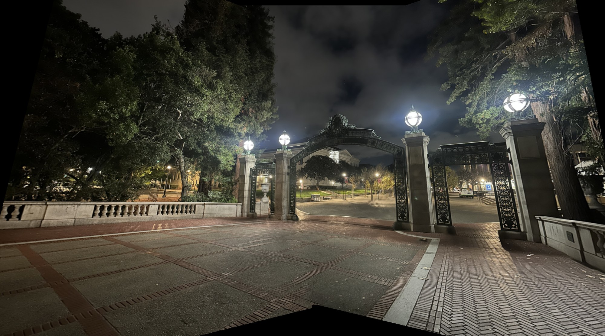
Intermediate steps
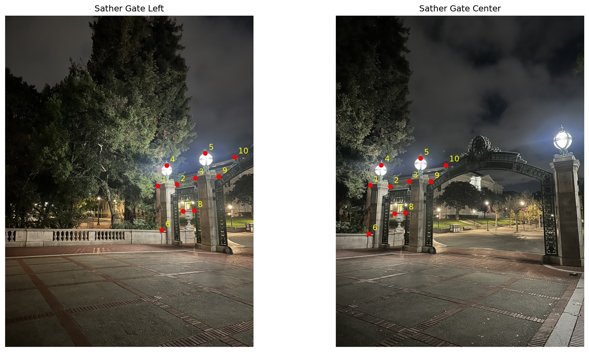
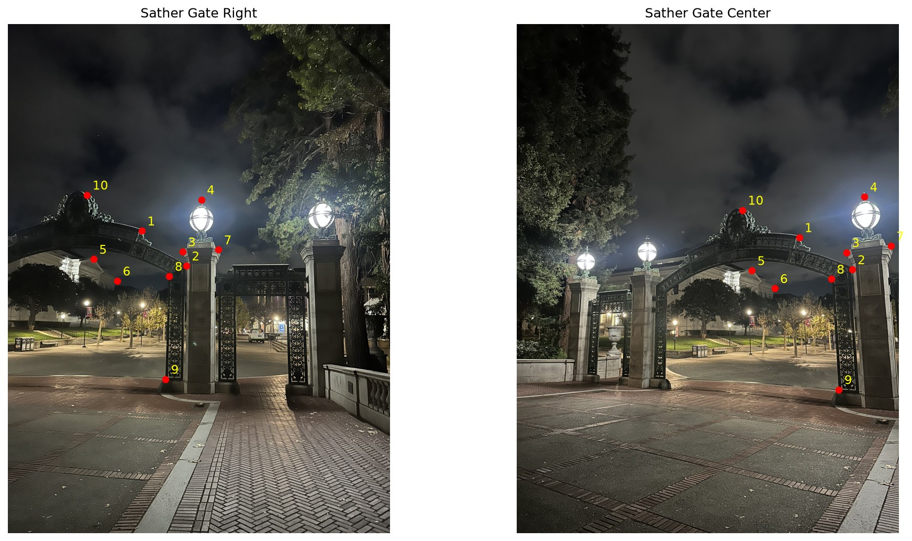
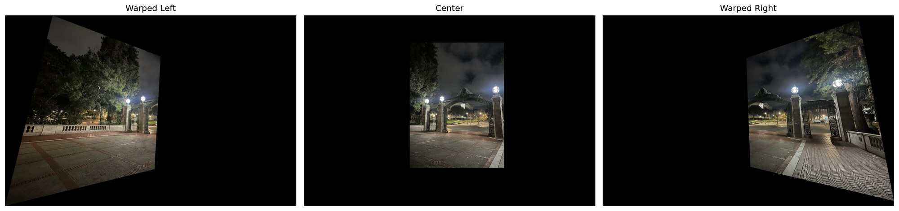
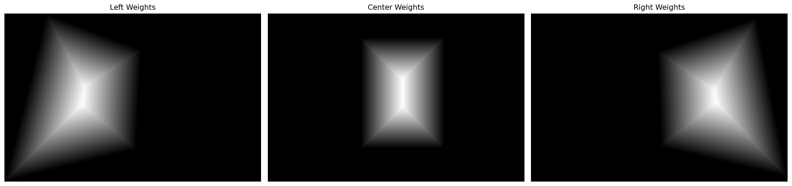
Mosaic 3: Residential Street
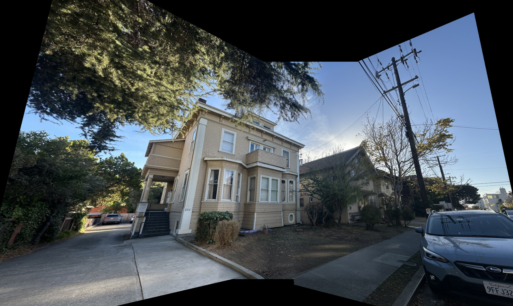
Intermediate steps
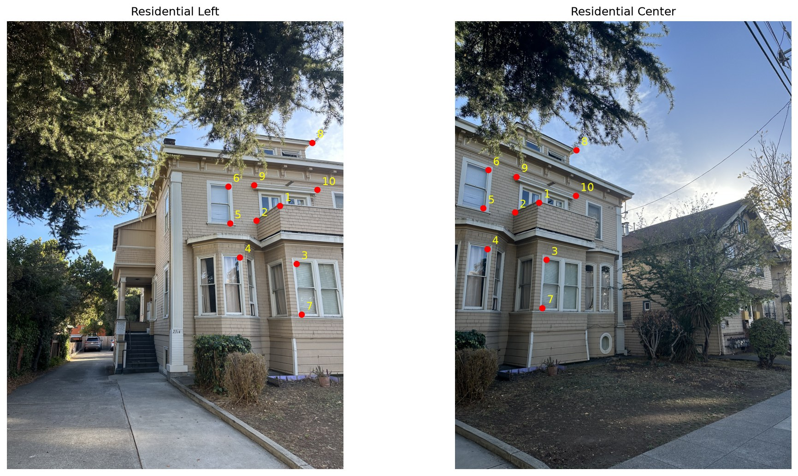
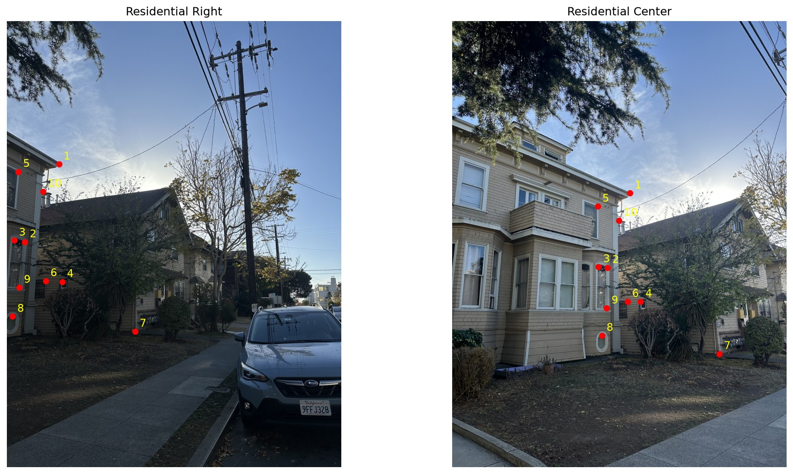
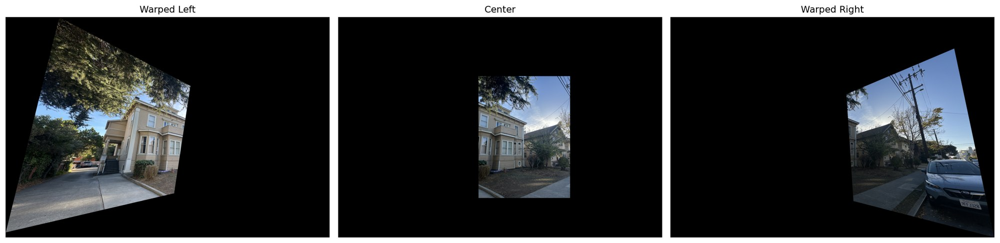
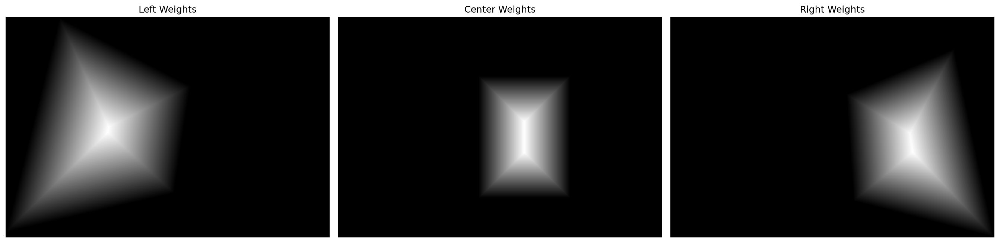
Observations
In all three of the mosaics I created, the transitions between photos are hard to spot on initial view. The feathering spreads any brightness difference that may be present between shots across the whole overlap, so there are no sharp seams that can be noticeable. The bow tie outline of the mosaic comes from projecting everything onto the center photo's plane. Therefore, the farther a photo is rotated from the center, the more its homography stretches it, so the outer images fan out toward the edges of the canvas.